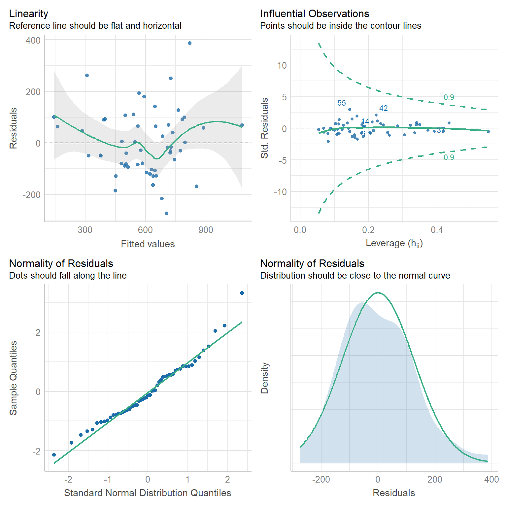
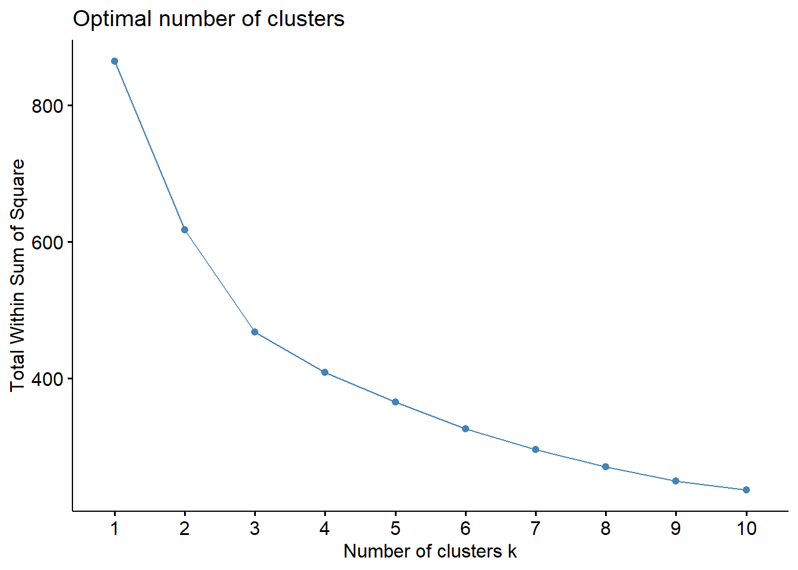
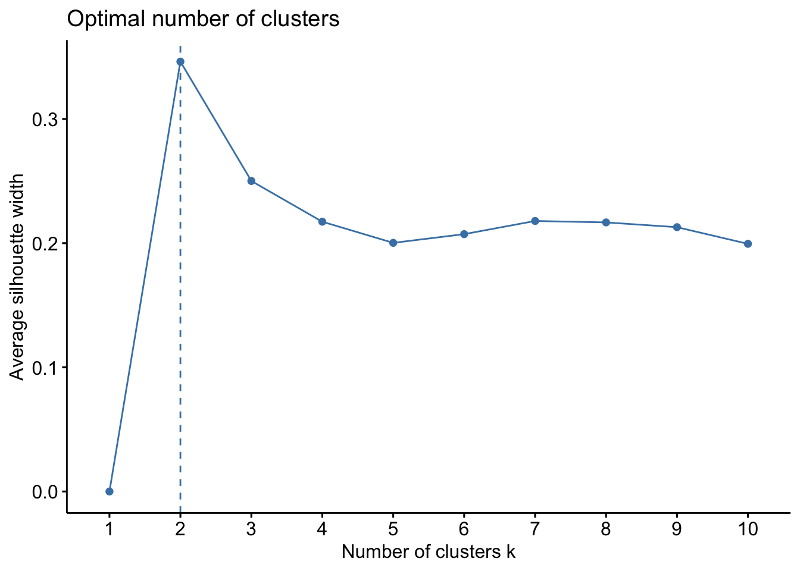
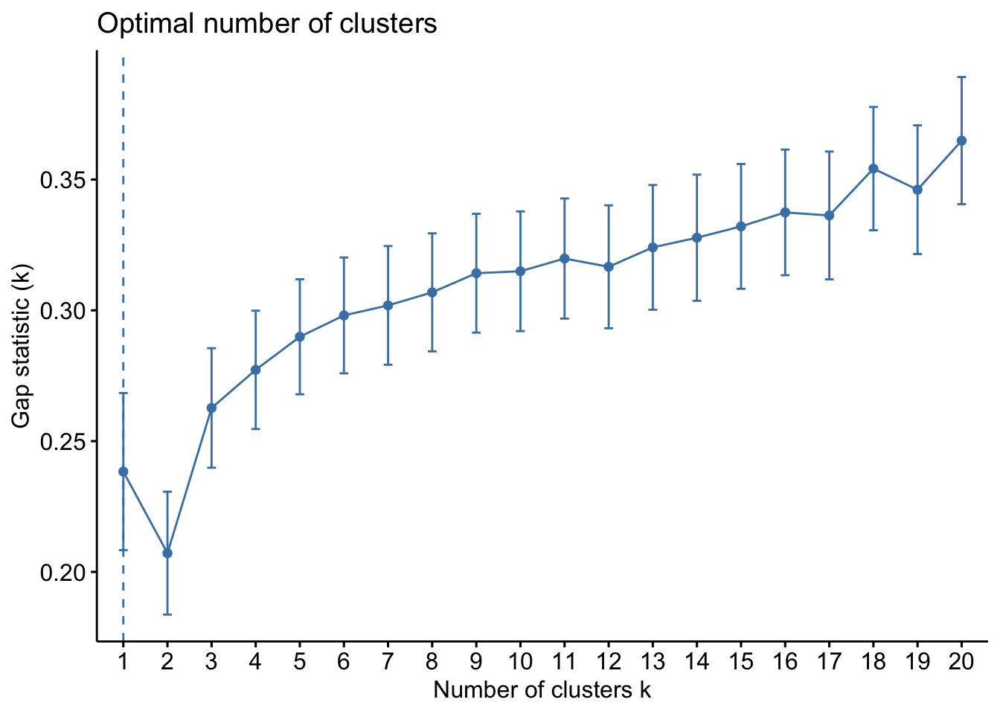

P8105: Project Report
Zachary Katz, Jimmy Kelliher, Tanvir Khan, Hun Lee, Tucker Morgan
Motivation
It’s difficult to overstate the extent to which the COVID-19 pandemic has tested the world’s public health infrastructure over the past two years. At the same time, the COVID-19 “experience” has manifested unequally – not just country to country, but city to city, and even borough to borough. As one of the most heterogeneous urban areas in the world, New York City provides a fascinating case study into the ways socioeconomic status may be associated with, or even mediate, disparities in health outcomes. (For instance, it’s already well-documented that income and race, along with socioeconomic privilege and political ideology, drive inequities in COVID vaccination rate across US cities.)
Knowing that socioeconomic factors have historically been associated with health outcomes, we aim to examine relationships between a range of predictors (e.g. race/ethnicity, education, broadband internet access, household income / occupational income score, public vs. private health insurance) and COVID-19 health outcomes – namely, hospitalizations, deaths, and vaccinations.
Initial Questions
Our initial questions are centered on how demographic factors in New York City trend with COVID-19 outcomes. Particularly, what are the key demographic correlates (e.g. race/ethnicity, education) of COVID-19 hospitalizations or vaccinations? Do PUMAs with more individuals on public health insurance fair equally well on key outcomes compared to those with more individuals on private health insurance? How does household income fit into the equation? Broadly, we aim to explore the myriad relationships between predictors and COVID-19 outcomes across New York City census tracts and boroughs.
See the website that accompanies this report here and the underlying website code here.
Data Sources and Cleaning
Data Sources
Integrated Public Use Microdata Series (IPUMS USA)
The Integrated Public Use Microdata Series (IPUMS USA) consists of individual-level data from samples of the US population drawn from the American Community Surveys (ACS) of 2000 - present as well as from fifteen federal censuses from 1850 to 2010. Each record in IPUMS is a person with numerically coded characteristics and “weight” variables indicating how many persons in the population are represented by each record. Samples were created at different times by different investigators, which lead to a variety of documentation conventions. However, IPUMS applies consistent coding and documentation across records to allow for effective analysis over time. A data extraction system exists to allow users to pull particular samples and variables from IPUMS. This project uses demographic and macroeconomic data from the American Community Survey (ACS) 2019 five-year estimate via IPUMS.
While data from IPUMS is recorded at the individual-level, each interview is coded to a particular Public Use Microdata Area (PUMA) geography where the census interviewee’s housing unit was located at the time of interview.
New York City Department of Health and Mental Hygiene (NYC DOHMH)
The New York City Department of Health and Mental Hygiene (NYC DOHMH) is one of the oldest public health agencies in the United States. Among other responsibilities, the DOHMH monitors the spread of infectious disease in NYC. The Department of Health classified the beginning of the COVID-19 pandemic as February 29, 2020, the date of the first laboratory-confirmed case. Since then, the DOHMH has recorded and reported COVID-19 data on a daily, weekly, or monthly basis. These data include cases, hospitalizations, and deaths by borough, modified Zip Code tabulation area (ZCTA), and demographic factors. As NYC has administered vaccinations for COVID-19, these data have been recorded and made available by borough, ZCTA, and demography. This project uses COVID-19 hospitalization rates, death rates, and vaccination rates by ZCTA in NYC.
Baruch College, City University of New York - Geoportal
The Baruch Geoportal, maintained by the Newman Library at Baruch College, is a repository of geospatial resources that includes tabular data sets, tutorials, maps, and crosswalks. This project uses a crosswalk data set from Baruch Geoportal to apportion NYC ZCTAs to PUMAs, enabling analysis of PUMA-coded data from IPUMS alongside COVID-19 outcome data from DOHMH at similar levels of granularity.
Data Cleaning
Pulling Data
As mentioned above, monthly outcome data reported at the ZCTA-level geography were obtained from the NYC DOHMH. First, these data were summed over the time interval March 2020 - Sept 2021 to obtain one cumulative incidence measure per ZCTA. However, the predictor variables from IPUMS were coded to the PUMA-level geography, and so we used the Baruch ZCTA-PUMA crosswalk data set to convert our data into common geographical units.
The following columns were used to convert ZCTA-level outcome data to PUMA-level data:
zcta10: ZCTA unique identifierpuma10: PUMA unique identifierper_in_puma: percentage of the specified ZCTA located within the specified PUMAper_of_puma: percentage of the specified PUMA occupied by the specified ZCTA
The following shows the mathematical expression used to convert from ZCTA-level outcome data \((Z_i)\) to PUMA-level outcome data \((P_j)\):
\[ \sum_{i = 1}^{n} Z_{i} \cdot \text{per_in_puma}_{ij} \cdot \text{per_of_puma}_{ij} = P_j \]
This bridged us towards one cumulative incidence measure per PUMA (per 100,000 people for hospitalizations and deaths, and per 100 people for vaccinations).
We proceeded to clean our demographic dataset from IPUMS, which originally contained over 350,000 interviews from the NYC area:
# Cleaning
jimzip <- function(csv_file, path) {
# create full path to csv file
full_csv <- paste0(path, "/", csv_file)
# append ".zip" to csv file
zip_file <- paste0(full_csv, ".zip")
# unzip file
unzip(zip_file)
# read csv
data_extract <- read_csv(csv_file)
# be sure to remove file once unzipped (it will live in working directory)
on.exit(file.remove(csv_file))
# output data
data_extract
}
# Apply function to filtered census data CSV
census_data <- jimzip("census_filtered.csv", "./data")
# Merging the Outcome Data
# Read in PUMA outcomes data
health_data <-
read_csv("./data/outcome_puma.csv")
# Merge census data with PUMA outcomes data
merged_data <- merge(census_data, health_data, by = "puma")
# Deprecate census data alone
rm(census_data)
## Cleaning the Data
# Clean the merged census and outcomes data
# Each row represents one
cleaned_data =
merged_data %>%
# Remove variables less useful for analysis or redundant (high probability of collinearity with remaining variables)
select(-serial, -cluster, -strata, -multyear, -ancestr1, -ancestr2, -labforce, -occ, -ind, -incwage, -occscore, -pwpuma00, -ftotinc, -hcovpub) %>%
# Remove duplicate rows, if any
distinct() %>%
# Rename variables
rename(
borough = countyfip,
has_broadband = cihispeed,
birthplace = bpl,
education = educd,
employment = empstat,
personal_income = inctot,
work_transport = tranwork,
household_income = hhincome,
on_foodstamps = foodstmp,
family_size = famsize,
num_children = nchild,
US_citizen = citizen,
puma_vacc_rate = puma_vacc_per,
on_welfare = incwelfr,
poverty_threshold = poverty
) %>%
# Recode variables according to data dictionary
mutate(
# Researched mapping for county
borough = recode(
borough,
"5" = "Bronx",
"47" = "Brooklyn",
"61" = "Manhattan",
"81" = "Queens",
"85" = "Staten Island"
),
rent = ifelse(
rent == 9999, 0,
rent
),
household_income = ifelse(
household_income %in% c(9999998,9999999), NA,
household_income
),
on_foodstamps = recode(
on_foodstamps,
"1" = "No",
"2" = "Yes"
),
has_broadband = case_when(
has_broadband == "20" ~ "No",
has_broadband != "20" ~ "Yes"
),
sex = recode(
sex,
"1" = "Male",
"2" = "Female"
),
# Collapse Hispanic observation into race observation
race = case_when(
race == "1" ~ "White",
race == "2" ~ "Black",
race == "3" ~ "American Indian",
race %in% c(4,5,6) ~ "Asian and Pacific Islander",
race == 7 & hispan %in% c(1,2,3,4) ~ "Hispanic",
race == 7 & hispan %in% c(0,9) ~ "Other",
race %in% c(8,9) ~ "2+ races"
),
birthplace = case_when(
birthplace %in% 1:120 ~"US",
birthplace %in% 121:950 ~ "Non-US",
birthplace == 999 ~"Unknown"
),
US_citizen = case_when(
US_citizen %in% c(1,2) ~ "Yes",
US_citizen %in% 3:8 ~"No",
US_citizen %in% c(0,9) ~ "Unknown"
),
# Chose languages based on highest frequency observed
language = case_when(
language == "1" ~ "English",
language == "12" ~ "Spanish",
language == "43" ~ "Chinese",
language == "0" ~ "Unknown",
language == "31" ~ "Hindi",
!language %in% c(1,12,43,0,31) ~ "Other"
),
# Collapse multiple health insurance variables into single variable
health_insurance = case_when(
hcovany == 1 ~ "None",
hcovany == 2 && hcovpriv == 2 ~ "Private",
hcovany == 2 && hcovpriv == 1 ~ "Public"
),
education = case_when(
education %in% 2:61 ~ "Less Than HS Graduate",
education %in% 62:64 ~ "HS Graduate",
education %in% 65:100 ~ "Some College",
education %in% 110:113 ~ "Some College",
education == 101 ~ "Bachelor's Degree",
education %in% 114:116 ~ "Post-Graduate Degree",
education %in% c(0,1,999) ~ "Unknown"
),
employment = case_when(
employment %in% c(0,3) ~ "Not in labor force",
employment == 1 ~ "Employed",
employment == 2 ~ "Unemployed"
),
personal_income = ifelse(
personal_income %in% c(9999998,9999999), NA,
personal_income
),
household_income = ifelse(
household_income %in% c(9999998,9999999), NA,
household_income
),
on_welfare = case_when(
on_welfare > 0 ~ "Yes",
on_welfare == 0 ~ "No"
),
poverty_threshold = case_when(
poverty_threshold >= 100 ~ "Above",
poverty_threshold < 100 ~ "Below"
),
work_transport = case_when(
work_transport %in% c(31:37, 39) ~ "Public Transit",
work_transport %in% c(10:20, 38) ~ "Private Vehicle",
work_transport == 50 ~ "Bicycle",
work_transport == 60 ~ "Walking",
work_transport == 80 ~ "Worked From Home",
work_transport %in% c(0, 70) ~ "Other"
)
) %>%
mutate(education = fct_relevel(education, "Less Than HS Graduate", "HS Graduate", "Some College", "Bachelor's Degree", "Post-Graduate Degree", "Unknown")) %>%
# Eliminate columns no longer needed after transformation
select(-hispan, -hcovany, -hcovpriv) %>%
# Relocate new columns
relocate(health_insurance, .before = personal_income) %>%
relocate(poverty_threshold, .before = work_transport) %>%
relocate(on_welfare, .before = poverty_threshold) %>%
relocate(perwt, .before = hhwt) %>%
# Create factor variables where applicable
mutate(across(.cols = c(puma, borough, on_foodstamps, has_broadband, sex, race, birthplace, US_citizen, language, health_insurance, education, employment, on_welfare, poverty_threshold, work_transport), as.factor)) %>%
# Ensure consistent use of percentages
mutate(
puma_death_rate = puma_death_rate / 1000,
puma_hosp_rate = puma_hosp_rate / 1000
)Because our outcomes data was minimially aggregated at the PUMA level and could not be disaggregated further, we decided it would be prudent to create a second cleaned data set for which each observation corresponded to a given PUMA, rather than a given census observation. To do so, we needed to use perwt (person weight, describing the number of persons in the coded area for whom the interview was representative) and hhwt (household weight, which plays a similar role but by household rather than by person in each geographic area) to weight our key census variables at the aggregated PUMA level.
# Example data frame with weightings for summary stats over each PUMA
nyc_puma_summary = cleaned_data %>%
# Note: do we need to filter to one individual per household for household weightings?
group_by(puma) %>%
summarize(
total_people = sum(perwt),
median_household_income = weighted.median(household_income, hhwt, na.rm = TRUE),
perc_foodstamps = sum(hhwt[on_foodstamps == "Yes"]) * 100 / sum(hhwt),
perc_broadband = sum(hhwt[has_broadband == "Yes"]) * 100 / sum(hhwt),
perc_male = sum(perwt[sex == "Male"]) * 100 / sum(perwt),
median_age = weighted.median(age, perwt, na.rm = TRUE),
perc_white = sum(perwt[race == "White"]) * 100 / sum(perwt),
perc_foreign_born = sum(perwt[birthplace == "Non-US"]) * 100 / sum(perwt),
perc_citizen = sum(perwt[US_citizen == "Yes"]) * 100 / sum(perwt),
perc_english = sum(perwt[language == "English"]) * 100 / sum(perwt),
perc_college = sum(perwt[education %in% c("Some College", "Bachelor's Degree", "Post-Graduate Degree")]) * 100 / sum(perwt),
perc_unemployed = sum(perwt[employment == "Unemployed"]) * 100 / sum(perwt),
perc_insured = sum(perwt[health_insurance %in% c("Private", "Public")]) * 100 / sum(perwt),
median_personal_income = weighted.median(personal_income, perwt, na.rm = TRUE),
perc_welfare = sum(perwt[on_welfare == "Yes"]) * 100 / sum(perwt),
perc_poverty = sum(perwt[poverty_threshold == "Below"]) * 100 / sum(perwt),
perc_public_transit = sum(perwt[work_transport == "Public Transit"]) * 100 / sum(perwt),
covid_hosp_rate = median(puma_hosp_rate),
covid_vax_rate = median(puma_vacc_rate),
covid_death_rate = median(puma_death_rate)
)This cleaned and aggregated data set has 55 rows, one for each PUMA, and is the basis for much of the exploratory analysis that follows.
Exploratory Analysis
Overview of Outcome Variables
Ultimately, we ended the data cleaning process with two data sets at different levels of aggregation: one at the census interview level, and another at the PUMA level. Most of our exploratory analysis focused on evaluating predictors and outcomes by PUMA, although the interview-level data was still helpful for us to determine outcome disparities across predictors city-wide.
We began by seeking a better understanding of how each of our three key outcomes – hospitalization rate, death rate, and vaccination rate – differ by PUMA.

When PUMAs are ranked from lowest outcome rate to highest outcome rate, and colored by borough, we find the following, as visualized in the graphs below:
- Hospitalization rate ranges from <0.5% to nearly 2%, with the plurality of high hospitalization rates occurring in Queens PUMAs and the plurality of low hospitalization rates occurring in Manhattan and Brooklyn PUMAs
- Death rate ranges from ~0.05% to ~0.6%, with the plurality of high death rates occurring in Queens PUMAs and the plurality of low death rates occurring in Manhattan and Brooklyn PUMAs
- Vaccination rate ranges from nearly 30% to over 100% (due to migrations between PUMAs), with all of the highest vaccination rates occurring in Manhattan and Queens, and all of the lowest vaccination rates occurring in Brooklyn and the Bronx
Although our regression modeling explores the relationship between particular variable pairings more fully to check for collinearity, we also were interested in observing how associated our key outcome variables were.


We found that hospitalization and death rate were significantly correlated, whereas vaccination had limited correlation with both hospitalization (0.187) and death (0.075) at the PUMA level. Interestingly, the correlation between our key outcome variables was effectively modified by borough; for example, vaccination and hospitalization were significantly correlated in the Bronx (0.930), whereas hospitalization and death were not significantly correlated in Staten Island (0.526).
Outcomes by Borough
After exploring outcomes at the PUMA level, we were keen to dive more deeply into disparities by borough. Beyond simply confirming with boxplots the distribution of key outcomes across PUMAs in a given borough (e.g. hospitalization and death distributed towards higher rates in Queens and Bronx PUMAs, vaccination distributed towards higher rates in Queens and Manhattan), we were also curious to see what would happen if we took the median city-wide PUMA for each outcome, and binarily divided the PUMAs in each borough into those above or below that median. Although we’re working with a small sample of only 55 PUMAs, which makes our borough percentages highly sensitive to single-PUMA changes, we find – to take one example – that ~79% of PUMAs in Queens are above the city-wide median PUMA on death rate, but ~86% of PUMAs in Queens are above the city-wide median PUMA on vaccination rate.

Outcomes by Demographic Combinations
For each unique combination of age group, race, and sex, we wanted to determine which demographic category performed best and worst on each key outcome, and populated the following tables:
# Lowest hospitalization rates
race_age_sex %>%
filter(outcome == "hosp_rate") %>%
mutate(
outcome_rate = outcome_rate / 1000
) %>%
arrange(outcome_rate) %>%
select(race, age_class, sex, outcome_rate) %>%
head() %>%
knitr::kable(
caption = "Lowest hospitalization rates",
col.names = c("Race", "Age", "Sex", "% Hospitalized"),
digits = 2
)| Race | Age | Sex | % Hospitalized |
|---|---|---|---|
| White | 21-30 | Female | 0 |
| White | 31-40 | Male | 0 |
| White | 31-40 | Female | 0 |
| White | 21-30 | Male | 0 |
| White | 41-50 | Male | 0 |
| White | 41-50 | Female | 0 |
# Highest hospitalization rates
race_age_sex %>%
filter(outcome == "hosp_rate") %>%
mutate(
outcome_rate = outcome_rate
) %>%
arrange(desc(outcome_rate)) %>%
select(race, age_class, sex, outcome_rate) %>%
head() %>%
knitr::kable(
caption = "Highest hospitalization rates",
col.names = c("Race", "Age", "Sex", "% Hospitalized"),
digits = 2
)| Race | Age | Sex | % Hospitalized |
|---|---|---|---|
| American Indian | 81-90 | Male | 1.27 |
| Other | 61-70 | Male | 1.22 |
| Other | 11-20 | Male | 1.21 |
| Other | 41-50 | Male | 1.20 |
| Other | 61-70 | Female | 1.19 |
| Asian and Pacific Islander | 91-100 | Male | 1.17 |
# Lowest death rates
race_age_sex %>%
filter(outcome == "death_rate") %>%
mutate(
outcome_rate = outcome_rate
) %>%
arrange(outcome_rate) %>%
select(race, age_class, sex, outcome_rate) %>%
head() %>%
knitr::kable(
caption = "Lowest death rates",
col.names = c("Race", "Age", "Sex", "% Deceased"),
digits = 2
)| Race | Age | Sex | % Deceased |
|---|---|---|---|
| White | 21-30 | Female | 0.24 |
| White | 31-40 | Male | 0.24 |
| White | 21-30 | Male | 0.24 |
| White | 31-40 | Female | 0.25 |
| Other | 81-90 | Male | 0.25 |
| White | 41-50 | Male | 0.26 |
# Highest death rates
race_age_sex %>%
filter(outcome == "death_rate") %>%
mutate(
outcome_rate = outcome_rate
) %>%
arrange(desc(outcome_rate)) %>%
select(race, age_class, sex, outcome_rate) %>%
head() %>%
knitr::kable(
caption = "Highest death rates",
col.names = c("Race", "Age", "Sex", "% Deceased"),
digits = 2
)| Race | Age | Sex | % Deceased |
|---|---|---|---|
| 2+ races | 91-100 | Male | 0.35 |
| Asian and Pacific Islander | 91-100 | Male | 0.34 |
| American Indian | 81-90 | Male | 0.32 |
| Other | 11-20 | Male | 0.32 |
| Other | 41-50 | Male | 0.32 |
| Other | 71-80 | Male | 0.32 |
# Lowest vax rates
race_age_sex %>%
filter(outcome == "vax_rate") %>%
mutate(
outcome_rate = outcome_rate
) %>%
arrange(outcome_rate) %>%
select(race, age_class, sex, outcome_rate) %>%
head() %>%
knitr::kable(
caption = "Lowest vaccination rates",
col.names = c("Race", "Age", "Sex", "% Vaccinated"),
digits = 2
)| Race | Age | Sex | % Vaccinated |
|---|---|---|---|
| American Indian | 71-80 | Male | 49.32 |
| Black | 11-20 | Female | 49.35 |
| Black | <11 | Male | 49.48 |
| Black | 11-20 | Male | 49.48 |
| Black | 31-40 | Female | 49.49 |
| Black | <11 | Female | 49.52 |
# Highest vax rates
race_age_sex %>%
filter(outcome == "vax_rate") %>%
mutate(
outcome_rate = outcome_rate
) %>%
arrange(desc(outcome_rate)) %>%
select(race, age_class, sex, outcome_rate) %>%
head() %>%
knitr::kable(
caption = "Highest vaccination rates",
col.names = c("Race", "Age", "Sex", "% Vaccinated"),
digits = 2
)| Race | Age | Sex | % Vaccinated |
|---|---|---|---|
| Asian and Pacific Islander | 91-100 | Female | 66.14 |
| Asian and Pacific Islander | 71-80 | Female | 65.90 |
| Asian and Pacific Islander | 71-80 | Male | 65.73 |
| Asian and Pacific Islander | 31-40 | Male | 65.62 |
| Asian and Pacific Islander | 31-40 | Female | 65.58 |
| 2+ races | 81-90 | Male | 65.48 |
Overall, hospitalization and death rates were lowest (best) among white males and females under age 30, whereas vaccination rates were highest (best) among Asian and Pacific Islander males and females. Older American Indian individuals, along with younger and middle-aged Black individuals, tended to have the lowest vaccination rates, while mixed race, American Indian, and “other” racial groups tended to have higher hospitalization and death rates.
Associations Between Individual Predictors and Outcomes
After exploring disparities in key outcomes across PUMAs and boroughs, we turn towards our large set of predictors, and begin by trying to determine which predictors to focus on using a correlation matrix (with outcomes). In the plot below, we include text only on those tiles that are highly significant, with p < 0.01.

Interestingly, we find:
- The variables highly positively correlated with hospitalization rate at the PUMA level are percent US citizens and percent foreign born; the variables highly negatively correlated with hospitalization rate at the PUMA level are percent white, percent using public transit to get to work, percent with health insurance, percent English-speaking at home, percent with college education, percent with broadband access, and median personal and household incomes.
- The variables highly positively correlated with death rate at the PUMA level, are percent US citizens and percent foreign born; the variables highly negatively correlated with death rate at the PUMA level are percent using public transit to get to work, percent with health insurance, percent college educated, and median personal and household incomes.
- The variables highly positively correlated with vaccination rate at the PUMA level are percent white, percent male, percent college educated, percent with broadband access, median age, and median personal and household incomes; the variables highly negatively correlated with vaccination rate at the PUMA level are percent on welfare, percent unemployed, percent below the poverty threshold, and percent on food stamps
All in all, there are a couple of interesting trends observed in this correlation matrix. First, income seems strongly associated with all three outcome variables. In addition, the variables strongly associated with hospitalization rate also tend to be strongly associated with death rate, which is not much of a surprise given the high correlation already observed between hospitalization and death rate across PUMAs. Finally, we note that many signifiers of socioeconomic status – including poverty level, welfare, unemployment, and food stamp utilization – seem highly correlated with vaccination, but not with hospitalization and death. Given that vaccination is a more “active” outcome (requiring deliberate action) here than hospitalization or death, which are both the result of (in all likelihood) “passive” or indeliberate transmission, the association of socioeconomic factors with vaccination begin to indicate the potential impact from significant structural inequalities at play, hindering healthcare access among the poor.
We then selected each of the four variables with highest correlation (positive or negative) to each outcome, excluding obvious redundancies (like personal income and household income), and explored specific association trends between predictor and outcome, colored by borough.


Beyond the predictors significantly associated with each outcome, we wanted to focus as well on how outcomes varied by levels of key socioeconomic variables – namely, race, age group, and sex. Because we lack individual outcome data (i.e. each census observation within a given PUMA has the same PUMA-level hospitalization, death, and vaccination rate), we assumed for this analysis that all persons in a given PUMA had equal likelihood of a particular outcome (hospitalization, death, or vaccination) being true, with the likelihood corresponding to the PUMA outcome rate.


Some key findings include:
- Males and females appear similar on each outcome
- Hospitalization and death rates tend to be higher after middle age compared to those below middle age, whereas vaccination rate shows a general increase with each age group
- In general, white individuals have a lower likelihood of hospitalization and death, but a higher likelihood – along with Asian and Pacific Islanders – of vaccination, whereas other groups of color and Native Americans seem to have higher hospitalization and death rates, but lower vaccination rates
Similarly, we examined how key outcomes varied across categories of a few seemingly important predictor variables for each outcome observed in our correlation matrix:


Again, there were a few interesting findings here, such as:
- We observe a monotonic decrease in hospitalization and death rate as household income increases, but a monotonic increase in vaccination rate as household income increases as well
- Individuals with public health insurance tend to perform similarly on key outcomes to those with no health insurance at all, with both groups worse than those who have private health insurance
- Individuals with college and graduate education tend to perform better on key outcomes than those without any college education
- Those with unknown citizenship status, which may signify being “undocumented,” tend to have lower death rates – perhaps indicative of under-reporting due to fear of immigration control / policing, i.e. attention on the person or family
- As already noted, those on welfare and foodstamps, as well as unemployed, are significantly less likely to be vaccinated against COVID-19
Associations Between Predictors and Outcomes by Borough
To build on the work above, we wanted to observe disparities within boroughs, knowing that different boroughs have different demographic compositions and that the ideal visualizations would allow us to understand how outcomes vary conditioned on borough demographic composition. Each of the following visualizations has three panels: number of people with outcome, categorized by borough and colored by predictor level; % of people with outcome in each borough, colored by predictor level, compared to the overall composition of the borough by predictor level; and percent with outcome variable, in each borough, plotted by level of predictor.


The most interesting finding here is that Manhattan seems to have the most significant racial disparities on hospitalization rate and death rate, along with age disparities on hospitalization rate, and racial and age disparities in vaccination rate. In general, the level of inequality on key outcomes across demographics in Manhattan tends to be higher than in other boroughs.
Regression
Methodology
For our statistical analysis, we consider a linear regression. In particular, let \(S\) denote the set of PUMAs in NYC, and let \(y_s\) denote our outcome of interest for PUMA \(s \in S\). We consider the latent variable model \[ y_s = \xi_s' \beta + \varepsilon_s \] for each \(s \in S\), where \(\xi_s\) is a vector of PUMA-level means of data from the census and \(\beta\) is a vector of parameters. There are two challenges in considering such a model: (1) we know historically that NYC neighborhoods, particularly those within boroughs, are subject to spatial correlation; and (2) because the census data is recorded at the interview level, we do not observe the group-level means \(\xi_s\).
In order to address (1), we employ heteroscedasticity-robust White standard errors to deal with the potential threat of spatial correlation. We find that all of our coefficient estimates retain their significance under the adjusted standard errors, and hence we leave this check on robustness to the appendix.
More interesting is the challenge presented in (2). For each \(s \in S\), suppose we observe \(i \in \{ 1, \ldots, n_s \}\) individual-level interviews. It is natural to consider the group mean \[ \bar{X}_s \equiv \frac{1}{n_s} \sum_{i = 1}^{n_s} X_{is}. \] However, as shown in Croon and Veldhoven (2007), it is generally the case that using the observed group mean \(\bar{X}_s\) as an estimator of \(\xi_s\) will lead to biased regression coefficients. Thus, we address (2) by following the procedure outlined by Croon and Veldhoven to re-weight our group means and obtain adjusted group means \(\tilde{X}_s\). In particular, let \(\hat{\Sigma}_{\xi \xi}\) and \(\hat{\Sigma}_{\nu \nu}\) denote the usual ANOVA estimates of the between- and within-group variation matrices, respectively. The adjusted group means are then given by \[ \tilde{X}_s \equiv \bar{X}' (I - W_s) + \bar{X}_s' W_s, \quad \text{where} \] \[ W_s \equiv \left( \hat{\Sigma}_{\xi \xi} + \hat{\Sigma}_{\nu \nu} / n_s \right)^{-1} \hat{\Sigma}_{\xi \xi} \] and \(I\) denotes the identity matrix. Intuitively, the weight matrix \(W_s\) acts as a shrinkage estimator, shrinking the observed group mean \(\bar{X}_s\) in the direction of the citywide mean \(\bar{X}\). Observe that as the between-group variation dominates relative to the within-group variation, \(W_s\) converges to the identity matrix \(I\), and hence the adjusted group mean \(\tilde{X}_s\) converges to the observed group mean \(\bar{X}_s\). That is, the better we can see the neighborhood signals through the noise, the less we need to penalize the observed means.
With our unbiased estimates \(\xi_s\) in tow, we then proceed to model selection. Given that there are \(|S| = 55\) PUMAs, we must be careful to avoid overfitting our model. As such, we employ a stepwise algorithm with an objective function of minimizing the AIC. In this way, we penalize models subject to overfitting and obtain an appropriately parsimonious selection of predictors. Now that our theoretical concerns have been addressed, we can finally discuss our findings!
A word of caution: If the reader is considering such a macro-micro model for their own research, be advised that there is a typographical error in the Croon and Veldhoven paper. When estimating the unbiased between- and within-group covariance matrices, they inadvertently swap the divisors for their MSA and MSE. In large samples, this error can lead to weight matrices \(W_s\) that are not positive definite, which in turn leads to a non-convex combination of \(\bar{X}\) and \(\bar{X}_s\), which further leads to immense woe for the programmer who cannot understand why his or her unbiased estimates for non-negative random variables are somehow negative.
Results
Because death rates are relatively unreliable, and because vaccination rates are percentages that often attain their upper bound (i.e., 100%), our primary model employs hospitalization rates by PUMA as its dependent variable. Moreover, because the vaccine changed the dynamic of other health outcomes, we further restrict to hospitalizations up and until December 31, 2020. Below is a summary of our key finding from our optimal linear model.
# pull in health outcomes to be merged
outcome_by_year <-
# read in health outcomes by year
read_csv("./data/outcome_puma_by_year.csv") %>%
# harmonize puma variable for merge
rename(puma = puma10)
# standardize inputs for consistent interpretation
standardized_data <-
# read in unbiased group means for inputs
read_csv("./data/unbiased_group_means.csv") %>%
# apply the scale function to appropriate columns
mutate_at(-c(1, 2), ~ c(scale(., center = FALSE))) %>%
# merge with health outcomes
merge(outcome_by_year, by = "puma")
# store optimal linear model
best_model <- lm(
puma_hosp_rate_2020 ~
# unemployment rate
employment_not_in_labor_force +
# fraction of spanish speakers
language_spanish +
# fraction of english speakers
language_english +
# fraction of those born in the us
birthplace_us +
# fraction of those with bachelors degree
education_bachelors_degree +
# fraction of those born in the us
birthplace_us +
# fraction of those using public health insurance
health_insurance_public +
# average personal income
personal_income +
# language-birthplace interaction
language_english:birthplace_us +
# education-income interaction
education_bachelors_degree:personal_income +
# insurance-income interaction
health_insurance_public:personal_income
, data = standardized_data
)
# store full model to compute mallow's cp
full_model <- lm(
puma_hosp_rate_2020 ~
# unemployment rate
(employment_not_in_labor_force +
# fraction of spanish speakers
language_spanish +
# fraction of english speakers
language_english +
# fraction of those born in the us
birthplace_us +
# fraction of those with bachelors degree
education_bachelors_degree +
# fraction of those born in the us
birthplace_us +
# fraction of those using public health insurance
health_insurance_public +
# average personal income
personal_income)^2
, data = standardized_data
)
# create professional table for regression output
best_model %>%
# summarize regression output
summary() %>%
# tidy regression output
broom::tidy() %>%
# map to a kable table
kbl(
caption = "Effect of Selected Predictors on the 2020 Hospitalization Rate"
, col.names = c("Predictor", "Estimate", "SE", "t-statistic", "p-value")
, digits = c(1, rep(0, 2), 2, 4)
, format.args = list(big.mark = ',')
) %>%
# further map to a more professional-looking table
kable_paper("striped", full_width = F) %>%
# make variable names bold
column_spec(1, bold = T)| Predictor | Estimate | SE | t-statistic | p-value |
|---|---|---|---|---|
| (Intercept) | 220 | 618 | 0.36 | 0.7232 |
| employment_not_in_labor_force | 2,141 | 471 | 4.54 | 0.0000 |
| language_spanish | 426 | 83 | 5.12 | 0.0000 |
| language_english | -191 | 282 | -0.68 | 0.5014 |
| birthplace_us | -1,481 | 351 | -4.22 | 0.0001 |
| education_bachelors_degree | -271 | 235 | -1.15 | 0.2559 |
| health_insurance_public | -1,374 | 289 | -4.76 | 0.0000 |
| personal_income | -1,418 | 428 | -3.31 | 0.0019 |
| language_english:birthplace_us | 714 | 302 | 2.36 | 0.0226 |
| education_bachelors_degree:personal_income | 577 | 194 | 2.97 | 0.0048 |
| health_insurance_public:personal_income | 1,643 | 389 | 4.22 | 0.0001 |
For the sake of interpretation, all predictors above have been partially standardized. That is, for each predictor \(x\), let \(s\) denote the sample standard deviation of the predictor. We define the partially standardized predictor to be \[ z \equiv \frac{x}{s}. \] Note that this is an unweighted standardization. We do not employ population weights at this stage, as we have already weighted our data to address the issue of bias in our latent variable model. This standardization is solely for ease of interpretation. Moreover, note that we do not de-mean our data (i.e., subtract \(\bar{x}\)), as several predictors are aggregations of binary variables, which are necessarily non-negative. By de-meaning such predictors, negative values are introduced, thereby muddying the interpretation of their coefficients.
Proceeding to the interpretation of our findings, we consider predictors in order of their featured complexity in the model. For example, only the main effect of language_spanish is estimated, whereas personal_income is present in two interaction terms.
employment_not_in_labor_force: an increase in one standard deviation of the unemployment rate predicts an increase in the hospitalization rate of 2,141 residents per 100,000. As one might expect, the unemployment rate is positively associated with the hospitalization rate.language_spanish: an increase in one standard deviation of the fraction of residents whose primary spoken language is Spanish predicts an increase in the hospitalization rate of 426 residents per 100,000.birthplace_us: given some realization oflanguage_english, the estimated effect of being born in the US on the hospitalization rate is given by \[ -1,481 + 714 \times \text{language_english}. \] That is, an increase in one standard deviation of the fraction of residents born in the US predicts a decrease in the hospitalization rate of 1,481 residents per 100,000, but this effect is diminished in neighborhoods where the primary spoken language is English. That is, this predictor is less important in neighborhoods where most of the residents speak English, which is intuitive.health_insurance_public: given some realization ofpersonal_income, the estimated effect of being born in the US on the hospitalization rate is given by \[ -1,374 + 1,643 \times \text{personal_income}. \] That is, an increase in one standard deviation of the fraction of residents with public health insurance predicts a decrease in the hospitalization rate of 1,374 residents per 100,000, but this effect is diminished in neighborhoods with higher average personal income. That is, while access to public health insurance is important, those with high income have the privilege of being able to seek care regardless of their insurance status.personal_income: given some realization ofhealth_insurance_publicandeducation_bachelors, the estimated effect of personal income on the hospitalization rate is given by \[ -1,418 + 1,643 \times \text{health_insurance_public} + 577 \times \text{education_bachelors}. \] That is, an increase in one standard deviation of personal income predicts a decrease in the hospitalization rate of 1,418 residents per 100,000, but this effect is diminished in neighborhoods with higher rates of public health insurance and bachelors degrees. It is most likely that in neighborhoods with lower average personal incomes, access to public health insurance and education are better predictors of the hospitalization rate than personal income.
Note: the main effect for both language_english and education_bachelors_degree are not statistically significant, and hence they should only be interpreted in the context of their interactions.
Diagnostics
We now seek to validate our model and assess its goodness of fit. We begin by assessing to what extent our model satisfies the assumptions of OLS. Note that our choice to standardize our predictors does not effect our analysis of residuals, which are invariant to linear transformations of the data.
# prepare model for regression diagnostics
lm_spec <- linear_reg() %>%
set_mode("regression") %>%
set_engine("lm")
# store optimal linear model
best_model_tidy <- fit(lm_spec,
puma_hosp_rate_2020 ~
# unemployment rate
employment_not_in_labor_force +
# fraction of spanish speakers
language_spanish +
# fraction of english speakers
language_english +
# fraction of those born in the us
birthplace_us +
# fraction of those with bachelors degree
education_bachelors_degree +
# fraction of those born in the us
birthplace_us +
# fraction of those using public health insurance
health_insurance_public +
# average personal income
personal_income +
# language-birthplace interaction
language_english:birthplace_us +
# education-income interaction
education_bachelors_degree:personal_income +
# insurance-income interaction
health_insurance_public:personal_income
, data = standardized_data
)
# run regression diagnostics
check_model(best_model_tidy, check = c("linearity", "outliers", "qq", "normality"))
Linearity: If a linear model has been properly specified, the residuals \(\hat{\varepsilon}_s\) should be mean zero and uncorrelated with the fitted values \(\hat{y}_s\). Together, these imply that the best fit line of the residuals regressed on the fitted values should have an intercept and slope of zero. As we can see in the top-left chart, the data satisfy this condition.
Homoscedasticity: We further expect that the covariance matrix of vector \(\hat{\varepsilon}\) assumes the form \(\sigma^2 I\) for some \(\sigma^2 > 0\). That is, the variance of our residuals should be constant across all fitted values. Again referring to the top-left chart, we can see that - save three outliers - the residuals tend to be evenly dispersed about the reference line.
Preclusion of Outliers: Though outliers can always exist in small samples, we require that no single outlier contributes too much variation by itself. Because all of the points in the top-right chart fall within the dashed curves, we can conclude that this assumption is satisfied.
Normality: Finally, we test the normality of our residuals. Outside of one outlier, the bottom-left QQ plot for normality exhibits a strong linear trend, as desired. Moreover, the empirical distribution of the residuals in the bottom-right chart closely follows a normal distribution centered at zero.
We have done our due diligence! In general, our linear model seems to be appropriate for the data. We now turn toward the more exciting statistics related to model performance.
# construct table of statistics to assess performance
best_model %>%
# summarize model output
summary() %>%
# extract key statistics
broom::glance() %>%
# bind rows for each model
bind_rows(summary(full_model) %>% broom::glance()) %>%
mutate(model = c("Best Model", "Full Model")) %>%
# relocate row names to first column
relocate(model) %>%
# map to a kable table
kbl(
caption = "Key Statistics for Model Performance"
, col.names = c(
"Model", "R-squared", "Adj. R-squared"
, "Sigma", "F-statistic", "p-value", "df", "Residual df", "N"
)
, digits = c(1, 2, 2, 0, 2, 5, 0, 0, 0)
) %>%
# further map to a more professional-looking table
kable_paper("striped", full_width = F) %>%
# make variable names bold
column_spec(1, bold = T)| Model | R-squared | Adj. R-squared | Sigma | F-statistic | p-value | df | Residual df | N |
|---|---|---|---|---|---|---|---|---|
| Best Model | 0.67 | 0.59 | 140 | 8.89 | 0.00000 | 10 | 44 | 55 |
| Full Model | 0.80 | 0.58 | 142 | 3.66 | 0.00068 | 28 | 26 | 55 |
# output mallows's cp
ols_mallows_cp(best_model, full_model) %>%
# map to tibble
as_tibble() %>%
# map to a kable table
kbl(col.names = "Mallows's Cp", digits = 2) %>%
# further map to a more professional-looking table
kable_paper("striped", full_width = F) %>%
# make variable names bold
column_spec(1, bold = T)| Mallows’s Cp |
|---|
| 9.53 |
To assess performance, we construct the smallest natural model in which our selected model is nested. In particular, the derived full model contains all possible main effects and interaction terms of the seven predictors of our selected model. Naturally, by the monotonicity of the \(R^2\) statistic, the full model has a higher coefficient of determination (0.80) than that of our best model (0.67). However, when it comes to out-of-sample prediction, the adjusted \(R^2\) statistic is much more critical. As we can see, the full model - which has nearly three times the predictors as our best model - has a lower adjusted \(R^2\) (0.58) than our best model (0.59). This is evidence that our parsimonious model retains predictive power even after adjusting for the overfitting present in the full model.
We further employ Mallows’s \(C_p\) criterion to assess the presence of bias in our model relative to the full model. We have a total of \(p = 10\) parameters in our best model, so our Mallows’s test statistic of 9.53 satisfies the criterion \(C_p \leq p\). We went to great lengths to construct our adjusted group means, so it is reassuring that this test provides evidence that our model is not subject to bias.
Predictive Risk Scoring & Clustering
Risk Scoring
Following our regression work, we decided to make our insights more actionable by developing a novel scoring method capable of indicating whether a PUMA is at relatively lower or higher risk of achieving some COVID-19-related outcome. To demonstrate the method, we developed a risk score for whether a PUMA is likely to have achieved or not achieved a vaccination rate of 70% among residents, corresponding to the level of population immunity generally considered requisite to “halt the pandemic.” That said, our method is applicable to other outcomes as well, and one might imagine using it to score a given PUMA on the possibility of a hospitalization rate above X%, or a death rate above Y%. We only chose to begin with vaccination rate given our inability to develop a linear regression for this particular outcome, as opposed to hospitalization and death rates.
The risk scoring method we developed is predicated on (regularized, lasso) logistic regression, used most often for classification tasks because predictions can be interpreted as class probabilities. Regularization further prevents over-fitting of the model. After defining our outcome as 1 for below 70% vaccination and 0 for equal to or above 70% vaccination, we converted our set of predictors to matrix form, and then trained a glmnet model on our training data using 5-fold cross-validation repeated 100 times given the large number of predictors compared to our mere 55 PUMA samples, and because we were interested in predicting the risk score of vaccination rate for each PUMA in our data set. Through our lasso regression, we found an optimal lambda tuning parameter of 0.0102, and generated a model prediction accuracy of 0.886 (~87%). Generally, however, obtaining the kappa value averaged over the simulated confusion matrices is a more useful metric for prediction given unbalanced classes (of our 55 PUMAs, 41 achieve vaccination rate >= 70%, and only 14 do not); Our optimal model’s averaged kappa was 0.63, which is considered reasonably decent, but again suggests that the limited number of in-sample data points may result in model over-fitting.
# 1 indicates BELOW 70% vaccination rate
logistic_df = nyc_puma_summary %>%
mutate(
below_herd_vax = as.factor(ifelse(covid_vax_rate >= 70, 0, 1))
) %>%
select(-puma, -total_people, -covid_hosp_rate, -covid_death_rate, -covid_vax_rate)
# Define predictors matrix
x = model.matrix(below_herd_vax ~ ., logistic_df)[,-1]
# Define outcomes
y = logistic_df$below_herd_vaxlibrary(caret) # Note: new libraries are loaded here due to potential function masking from the `caret` library
library(mlbench)set.seed(777)
vax_cv <- trainControl(method = "repeatedcv", number = 5, repeats = 100,
savePredictions = T
)
# Goal is to find optimal lambda
lasso_model <- train(below_herd_vax ~ ., data = logistic_df,
method = "glmnet",
trControl = vax_cv,
tuneGrid = expand.grid(
.alpha = 1,
.lambda = seq(0.0001, 1, length = 100)),
family = "binomial")coef <- coef(lasso_model$finalModel, lasso_model$bestTune$lambda)
sub_lasso <-
subset(lasso_model$pred, lasso_model$pred$lambda == lasso_model$bestTune$lambda)
# Use function for better visualization of confusion matrix
# Credit to https://stackoverflow.com/questions/23891140/r-how-to-visualize-confusion-matrix-using-the-caret-package/42940553
draw_confusion_matrix <- function(cm) {
layout(matrix(c(1,1,2)))
par(mar=c(2,2,2,2))
plot(c(100, 345), c(300, 450), type = "n", xlab="", ylab="", xaxt='n', yaxt='n')
title('55 PUMAs Across 100 Simulations (n=5500)', cex.main=2)
# create the matrix
rect(150, 430, 240, 370, col='#fde725')
text(195, 435, 'Above 70% Vax', cex=1.2)
rect(250, 430, 340, 370, col='#440154')
text(295, 435, 'Below 70% Vax', cex=1.2)
text(125, 370, 'Predicted', cex=1.3, srt=90, font=2)
text(245, 450, 'Actual', cex=1.3, font=2)
rect(150, 305, 240, 365, col='#440154')
rect(250, 305, 340, 365, col='#fde725')
text(140, 400, 'Above 70% Vax', cex=1.2, srt=90)
text(140, 335, 'Below 70% Vax', cex=1.2, srt=90)
# add in the cm results
res <- as.numeric(cm$table)
text(195, 400, res[1], cex=1.6, font=2, col='black')
text(195, 335, res[2], cex=1.6, font=2, col='white')
text(295, 400, res[3], cex=1.6, font=2, col='white')
text(295, 335, res[4], cex=1.6, font=2, col='black')
# add in the specifics
plot(c(100, 0), c(100, 0), type = "n", xlab="", ylab="", main = "DETAILS", xaxt='n', yaxt='n')
text(10, 85, names(cm$byClass[1]), cex=1.2, font=2)
text(10, 70, round(as.numeric(cm$byClass[1]), 3), cex=1.2)
text(30, 85, names(cm$byClass[2]), cex=1.2, font=2)
text(30, 70, round(as.numeric(cm$byClass[2]), 3), cex=1.2)
text(50, 85, names(cm$byClass[5]), cex=1.2, font=2)
text(50, 70, round(as.numeric(cm$byClass[5]), 3), cex=1.2)
text(70, 85, names(cm$byClass[6]), cex=1.2, font=2)
text(70, 70, round(as.numeric(cm$byClass[6]), 3), cex=1.2)
text(90, 85, names(cm$byClass[7]), cex=1.2, font=2)
text(90, 70, round(as.numeric(cm$byClass[7]), 3), cex=1.2)
# add in the accuracy information
text(30, 35, names(cm$overall[1]), cex=1.5, font=2)
text(30, 20, round(as.numeric(cm$overall[1]), 3), cex=1.4)
text(70, 35, names(cm$overall[2]), cex=1.5, font=2)
text(70, 20, round(as.numeric(cm$overall[2]), 3), cex=1.4)
}
cm = caret::confusionMatrix(table(sub_lasso$pred, sub_lasso$obs))
draw_confusion_matrix(cm)
Notably, feature selection from our lasso regression discovered that the most important predictors of risk for sub-70% vaccination were insurance composition, employment composition, poverty composition, and welfare composition in a given PUMA – largely aligned with key correlates of vaccination noted in our exploratory analysis.
lambda <- seq(0.0001, 1, length = 100)
lambda_opt = lasso_model$bestTune$lambda
result_plot <- broom::tidy(lasso_model$finalModel) %>%
select(term, lambda, estimate) %>%
complete(term, lambda, fill = list(estimate = 0) ) %>%
filter(term != "(Intercept)") %>%
ggplot(aes(x = log(lambda, 10), y = estimate, group = term, color = term)) +
geom_path() +
geom_vline(xintercept = log(lambda_opt, 10), color = "blue", size = 1.2) +
theme(legend.position = "none") +
labs(y = "Coefficient Estimate", title = "Coefficient Estimates for Varying Values of Lambda")
result_plot
Again, we wanted to move beyond binary classification to develop a risk score. Generally, in logistic regression, when a data point is predicted with probability > 0.5 to be a “1,” the model classifies it as a 1, and otherwise as a 0. We obtained risk scores not only by classifying PUMAs as above or below 70% vaccination rate using our prediction model, but by obtaining the exact probability of a given data point being a 1. For instance, if a PUMA has an 85% chance of being below 70% vaccination rate according to our classifier, its risk score would be 85, even though our model would binarily predict it to be a “1” rather than a “0.”
lambda <- lasso_model$bestTune$lambda
lasso_fit = glmnet(x, y, lambda = lambda, family = "binomial")
risk_predictions = (round((predict(lasso_fit, x, type = "response"))*100, 1))
puma <- nyc_puma_summary %>%
select(puma)
vax <- logistic_df %>%
select(below_herd_vax)
risk_prediction <-
bind_cols(puma, vax, as.vector(risk_predictions)) %>%
rename(risk_prediciton = ...3)
risk_prediction %>%
mutate(puma = fct_reorder(puma, risk_prediciton, .desc = TRUE)) %>%
ggplot(aes(x = puma, y = risk_prediciton, fill = below_herd_vax)) +
geom_bar(stat = "identity") +
geom_hline(yintercept = 50, linetype = "dashed", color = "red") +
theme(axis.text.x = element_text(angle = 90, vjust = 0.5, hjust = 1)) +
labs(title = "Predicting Risk Score of Vaccination Rate across PUMA",
x = "PUMA", y = "Predicted Risk Score", fill = "Actual Vax Status") +
scale_fill_viridis(discrete = TRUE, labels = c("Below 70%", "Above 70%"))
Clustering
We were also curious how statistical learning techniques would cluster our PUMAs based on predictors, and how those clusters might correspond to performance on key outcomes. We separated our data into a tibble of predictors only and a tibble of outcomes only, then fit three clusters – just to try it – on our predictors alone. We proceeded to plot each PUMA on hospitalization rate vs vaccination rate (choosing to forego death rate, in this case, given its collinearity and likely redundancy of hospitalization rate), then colored each data point by predicted clustering.
# Define tibble of predictors only
predictors = nyc_puma_summary %>%
select(-puma, -total_people, -covid_hosp_rate, -covid_vax_rate, -covid_death_rate)
# Define tibble of outcomes only
outcomes = nyc_puma_summary %>%
select(covid_hosp_rate, covid_death_rate, covid_vax_rate)
# Define tibble of pumas only
pumas = nyc_puma_summary %>%
select(puma)
# Fit 3 clusters on predictors
kmeans_fit =
kmeans(x = predictors, centers = 3)
# Add clusters to data frame of predictors and bind with PUMA and outcomes data
predictors =
broom::augment(kmeans_fit, predictors)
# Bind columns
full_df = cbind(pumas, outcomes, predictors)
# Summary df
summary_df = full_df %>%
group_by(.cluster) %>%
summarize(
median_hosp = median(covid_hosp_rate),
median_death = median(covid_death_rate),
median_vax = median(covid_vax_rate)
)
# Plot predictor clusters against outcomes
# Example: try hospitalization vs vaccination
ggplot(data = full_df, aes(x = covid_hosp_rate, y = covid_vax_rate, color = .cluster)) +
geom_point() +
geom_point(data = summary_df, aes(x = median_hosp, y = median_vax), color = "black", size = 4) +
geom_point(data = summary_df, aes(x = median_hosp, y = median_vax, color = .cluster), size = 2.75) +
labs(x = "COVID Hospitalization Rate", y = "COVID Vaccination Rate", title = "COVID Hospitalization vs Vaccination Rates for each PUMA", color = "Cluster")
Generally, our three clusters included:
- One cluster with relatively low hospitalization rate (~5%) and relatively high vaccination rate (~75%)
- Two clusters with relatively identical average hospitalization rate (~10%), but one with substantially higher vaccination rate (nearly 60%) than the other (nearly 50%)
For fun, we also evaluated Euclidean distance between our observed PUMAs, and alternatively mapped PUMAs onto their respective clusters after reducing our predictors to two key (principal) component dimensions.
# Scale predictors
for_clustering = predictors %>%
select(-.cluster) %>%
na.omit() %>%
scale()
# Evaluate Euclidean distances between observations
distance = get_dist(for_clustering)
fviz_dist(distance, gradient = list(low = "#00AFBB", mid = "white", high = "#FC4E07"))
# Cluster with three centers
k_scaled = kmeans(for_clustering, centers = 3)
# Visualize cluster plot with reduction to two dimensions
fviz_cluster(k_scaled, data = for_clustering)
# Bind with outcomes and color clusters
full_df = for_clustering %>%
as_tibble() %>%
cbind(outcomes, pumas) %>%
mutate(
cluster = k_scaled$cluster
)Because we settled on setting the number of clusters at three relatively arbitrarily, we decided to evaluate the clustering quality using both WSS, silhouette, and gap methods.
# Check where elbow occurs using WSS method
fviz_nbclust(for_clustering, kmeans, method = "wss")
# Check for optimal number of clusters using silhouette method
fviz_nbclust(for_clustering, kmeans, method = "silhouette")
# Check number of clusters that minimize gap statistic
gap_stat = clusGap(for_clustering, FUN = kmeans, nstart = 25, K.max = 20, B = 50)
fviz_gap_stat(gap_stat)
The elbow in our WSS plot indicates that three clusters may be optimal, whereas the silhouette plot shows an average silhouette width optimized at two clusters. Finally, the gap plot shows that clustering is actually optimized when the number of clusters equals 1 – i.e. when no clustering occurs. The relative lack of concordance between these assessments of clustering quality is no surprise given the fact that our model is fit on only 55 predictors. For completeness, we re-modeled our clustering of predictors with only k = 2 clusters, and again tried to visualize where these clusters of PUMAs were distributed on the hospitalization/vaccination rate axes:
# Scale predictors
for_clustering = predictors %>%
select(-.cluster) %>%
na.omit() %>%
scale()
# Evaluate Euclidean distances between observations
distance = get_dist(for_clustering)
fviz_dist(distance, gradient = list(low = "#00AFBB", mid = "white", high = "#FC4E07"))
# Cluster with two centers
k_scaled2 = kmeans(for_clustering, centers = 2)
# Visualize cluster plot with reduction to two dimensions
fviz_cluster(k_scaled2, data = for_clustering)
# Bind with outcomes and color clusters
full_df = for_clustering %>%
as_tibble() %>%
cbind(outcomes, pumas) %>%
mutate(
cluster = k_scaled2$cluster
)With two clusters, our low hospitalization/high vaccination cluster remains, but our two mid-level hospitalization rate clusters are condensed into one cluster.
Discussion
Project Obstacles
The primary obstacles at the outset of the project were related to data pre-processing, getting our disparate data sources to play nice with each other. As mentioned elsewhere, our outcome variables were obtained at the ZCTA-level geography while our predictor variables were obtained at the interview-level and coded to PUMA geographies. We were able to use a ZCTA-PUMA crosswalk data set from Baruch College and a bit of math to merge these data sets for further analysis.
Another obstacle was to aggregate the interview-level data to the PUMA-level geography and to tidy the IPUMS variables according to the census data dictionary. For instance, factor variables like education and race were coded numerically, but these data needed to have descriptive factor levels for analysis. This process is described in more detail in the Data Sources and Cleaning section.
These data presented a unique regression challenge as well. First, NYC neighborhoods, particularly within boroughs, have historically been subject to spatial correlation. This required the use of heteroscedasticity-robust White standard errors. A larger issue was that group-level means were not observed in our data set; the census data was recorded at the interview level. We used a procedure outlined by Croon and Veldhoven (2007) to address this issue in our regression model.
Findings
In our exploratory analysis we looked at COVID-19 hospitalizations, deaths, and vaccinations across boroughs, PUMAs, and demographic combinations.
When looking at outcomes across boroughs, we saw that PUMA geographies in Queens and the Bronx tended to be above the median NYC PUMA for COVID-19 hospitalization and death rates. Interestingly, PUMA geographies in Queens were among the most highly vaccinated areas in NYC as well.
In general, we did not see notable differences of COVID-19 outcomes between males and females. When looking at demographic categories, we found that hospitalization and death rates were lowest among white males and females under 30 and that vaccination rates were highest among Asian and Pacific Islander males and females. The lowest vaccination rates were among older American Indian individuals and younger and middle-aged Black individuals.
In an analysis of correlations between predictors and outcomes across PUMA geographies, we found income to be strongly associated with COVID-19 hospitalizations (negative association), deaths (negative association), and vaccinations (positive association). We found that many indicators of socioeconomic status – including poverty level, welfare, unemployment, and food stamp utilization – seem highly negatively correlated with vaccination, but not with hospitalization and death. These findings may indicate the potential impact from significant structural inequalities that hinder healthcare access among the poor, given that vaccination is a more “active” outcome (requiring deliberate action) here than hospitalization or death, which are both the result of (in all likelihood) “passive” or indeliberate transmission.
Lastly, we saw that among boroughs, Manhattan had the most significant disparities of outcomes across demographic groups like race and age.
In our (logistic) regression modeling, we claim that the mean hospitalization rate in 2020 (outcome) is a linear combination of 10 predictor variables. We found language_spanish and employment_not_in_labor_force to be positively associated with mean hospitalization rates in 2020. We found education_bachelors_degree, birthplace_us, health_insurance_public, language_english, and personal_income to be negatively associated with hospitalization rate. We found statistically significant (p < 0.05) interactions between health_insurance_public and personal_income, education_bachelors_degree and personal_income, and birthplace_us and language_english.
Next Steps
Based on our analysis, future research could be performed to better understand the associations we found between socioeconomic status and barriers to healthcare access, shown in the correlations between economic predictors and hospitalization, mortality, and vaccination outcomes. These relationships and the potential causal mechanisms are important to understand in the efforts to emerge from the current COVID-19 pandemic and for future pandemics that we may face.
How can we ensure that diverse populations have access and take advantage of healthcare solutions? Future research can help understand “how to turn vaccines into vaccinations” to quote Dr. Michael Osterholm.